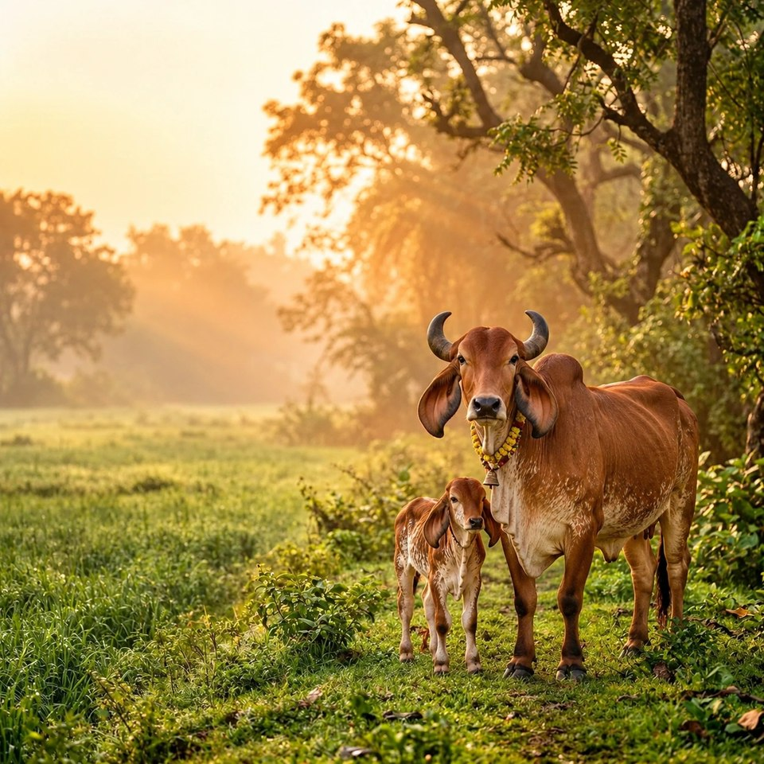
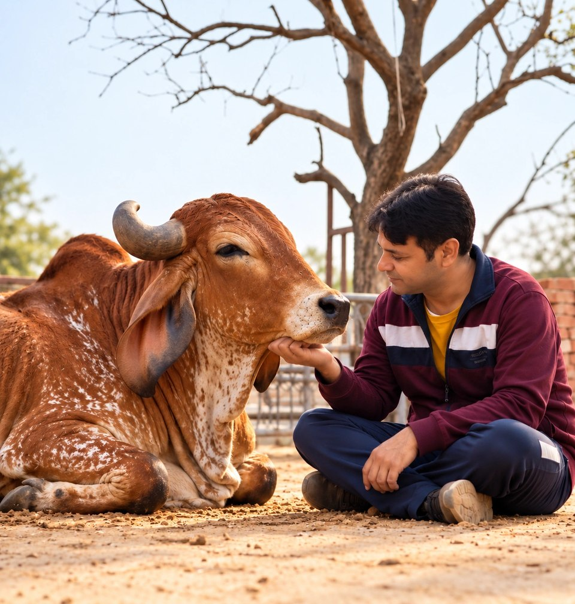
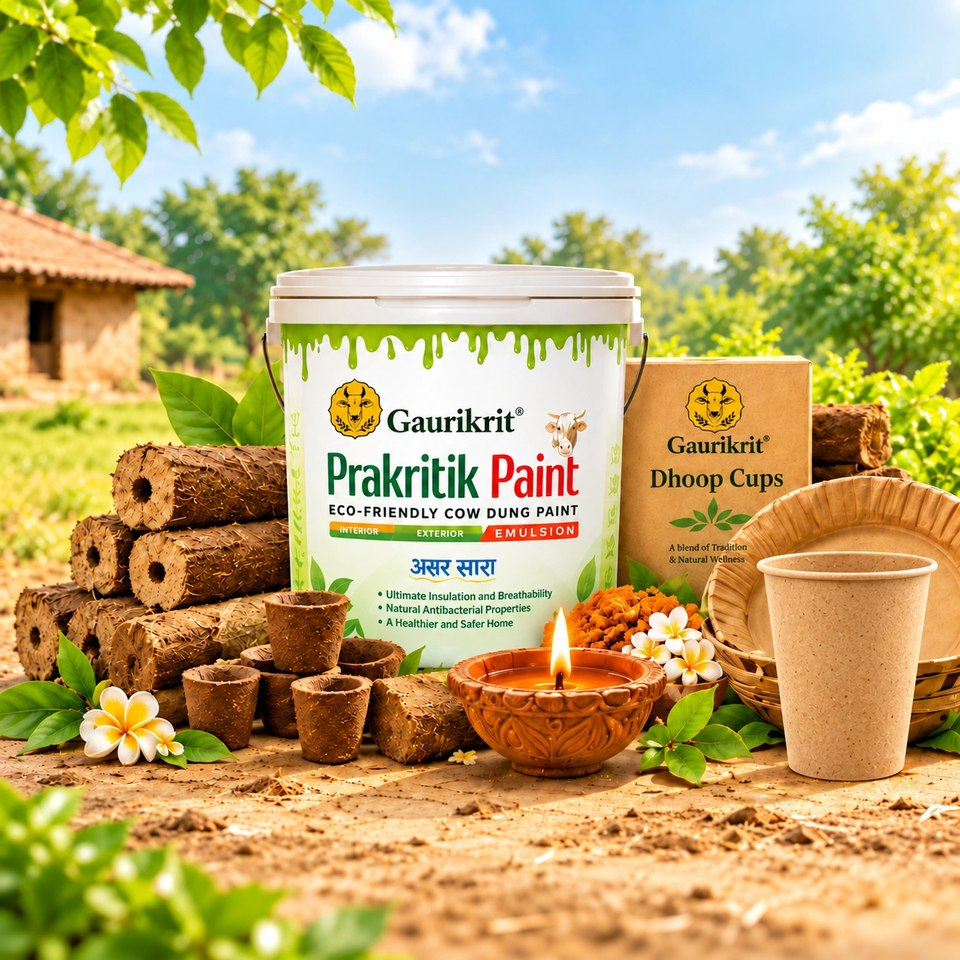
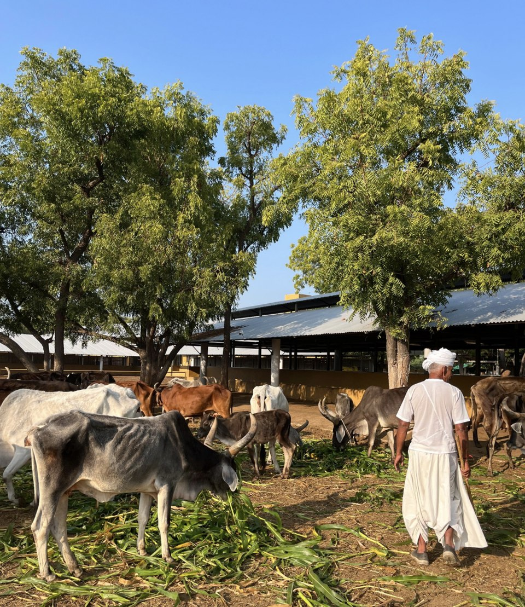
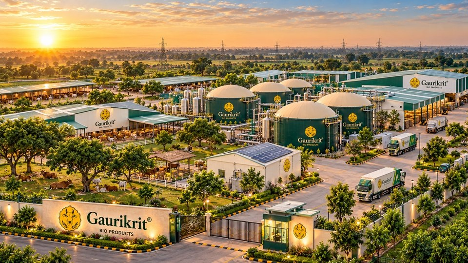

“The cow that nourished us for years should never lose her worth when she stops giving milk”
When Reverence
Becomes Responsibility
A Story of Compassion, Circularity & a Sustainable India

For centuries, we have worshipped the cow as a mother. But somewhere along the journey of modernization, we began to forget what it truly means to care for her.
In Indian civilization, the cow has never been merely an animal. She has been revered as Gau Mata — a symbol of nourishment, compassion, abundance. Deeply woven into our traditions, she has been associated with divine presence, agricultural prosperity, and the very foundation of rural life.
She gave us so much. Yet today, we must ask ourselves one uncomfortable question:
What happens to Gau Mata when she can no longer give us milk?
Restoring the Dignity of Gau Mata
Across India, countless cows face abandonment when they grow old or stop producing milk.
For a farmer struggling with rising costs, maintaining a non-milking cow can become an economic burden. Fodder, shelter, veterinary care and daily maintenance continue, even when income from milk stops.
And so, an animal once considered an essential part of the family may find herself wandering through crowded streets, searching for food among garbage, exposed to traffic, disease and neglect.
How can an animal we worship become an animal we abandon?
We believe that reverence must be expressed not only through rituals and traditions, but through meaningful action.
A cow’s dignity should never depend on her ability to produce milk. Her value must continue throughout her life.

Giving Farmers a Reason to Care — Turning Compassion into Livelihood
Through modern innovation, GAURIKRIT® transforms natural resources into sustainable products — including cow-dung logs, bio-briquettes, eco-friendly paints, and biodegradable utility products.
Our biomass fuel solutions aim to reduce dependence on conventional firewood, help protect trees, and promote responsible energy alternatives.
What was once considered waste becomes a resource. What was once a burden becomes an opportunity.
Bio-Briquettes: Futureline · Not yet in production
Eco Utility Products: Futureline · Not yet in production
Cow-Dung Logs: Development direction

Saving Trees by Rethinking Fuel — From Cow Dung to Green Energy
Every tree has a story. It absorbs carbon dioxide, supports biodiversity, protects soil, and provides life-sustaining ecological services.
Yet wood continues to be consumed as fuel in many traditional and commercial applications, adding pressure to forest and tree resources.
Why should valuable trees be cut for fuel when agricultural and livestock by-products can be transformed into useful alternatives?
This thinking inspired our focus on renewable biomass-based fuel solutions.
Through products such as Cow-Dung Logs, Bio-Briquettes, and other biomass fuels, GAURIKRIT® aims to provide alternatives to conventional firewood and selected fossil-based fuels wherever technically and environmentally appropriate.
Our vision is to help reduce dependence on wood-based fuel, promote responsible biomass utilization, and encourage cleaner, more resource-efficient energy practices.
We believe that the future of energy should not come at the cost of our forests. Every responsible alternative to harvested firewood is an opportunity to protect trees. Every underutilized natural resource transformed into a useful product is a step toward a more circular economy. And every innovation that reduces unnecessary resource extraction brings us closer to a sustainable tomorrow.

Cleaner Streets, Healthier Communities — Giving Waste a Purpose
Concept visual — not a photograph of an operational facilityIn many Indian towns and cities, abandoned cattle are a familiar sight. They wander along roads, gather near garbage dumps, and sometimes feed on plastic and contaminated waste.
Their unmanaged dung and urine can contribute to sanitation problems in public spaces, while their presence on busy roads creates risks for both animals and people.
But the problem is not the cow. The problem is a system that has failed to recognize the value of what she naturally produces.
We envision a different approach. What was once left unattended can become an input for useful products. What was once considered a sanitation burden can become a source of livelihood. What was once discarded can become part of a sustainable manufacturing ecosystem.
We do not see cow dung as waste. We see an opportunity waiting to be transformed.
Our aspiration is to support cleaner communities, healthier surroundings, and a more dignified existence for cattle.

From India’s Traditions to India’s Tomorrow — Building a Circular Economy
India has always understood something that the modern world is rediscovering: Nature operates in cycles, not in waste. What comes from the earth can often return to the earth or be transformed into something useful.
Through cow-dung-based products, renewable biomass fuels, eco-friendly paints, biodegradable utility products, and future sustainable technologies, we envision an ecosystem where natural resources are continuously reimagined for productive use.
An ecosystem that connects:
Animal Welfare → Farmer Livelihoods → Resource Recovery → Sustainable Products → Environmental Responsibility → National Growth
This is the circular economy we want to help build:
- One where farmers become stakeholders in sustainability.
- One where rural resource creates new economic opportunities.
- One where innovation supports resource conservation and responsible energy production.
- One where traditional Indian knowledge becomes the foundation for modern sustainable enterprise.
- And one where India’s economic progress can advance alongside environmental stewardship.
We aspire to contribute to a more self-reliant, resource-efficient, and environmentally responsible India. Not merely by manufacturing products, but by helping create value from resources that society has overlooked.
“She Gave Us a Lifetime of Nourishment.
We Owe Her a Lifetime of Dignity”
GAURIKRIT® — Redefining Resources. Regenerating the Future.
A registered Indian company
- Legal name
- Gaurikrit Bio Products (OPC) Private Limited
- Brand name
- Gaurikrit · गौरीकृत
- GSTIN
- 09AAMCG8400F1ZK
- seva@gaurikrit.com
- Phone
- +91 9999624446
- Phone (alternate)
- +91 9837638842
- Registered address
- House No. 55 Village Khuriyawali Post Arniya Khurja District Bulandshahr Uttar Pradesh – 203131